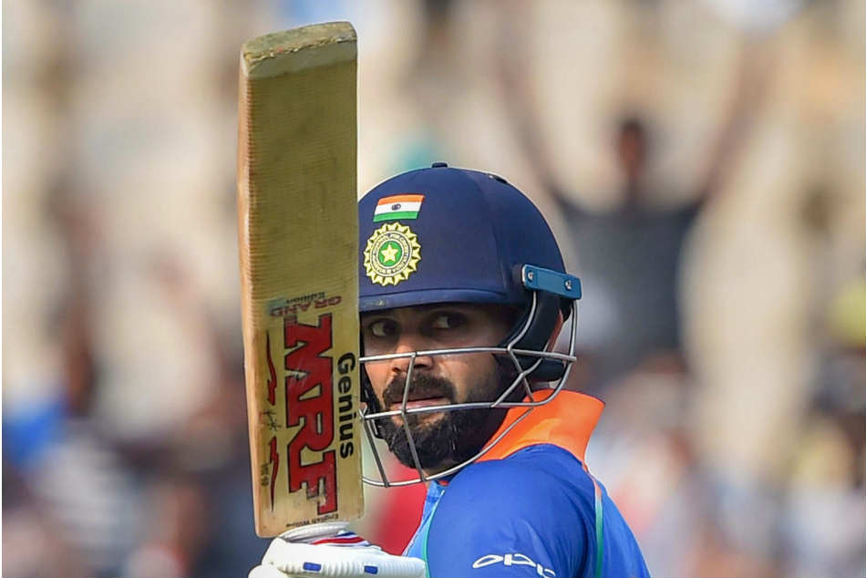

KING KOHLI

Daring, tough and fiercely talented,
Virat Kohli is arguably one of the finest batsmen that the country has produced.
He has even drawn comparisons with the great Sachin Tendulkar.
With a firm bottom-hand grip and the ability to smash balls landing on a particular area to any part of the ground at will and without much risk,
Kohli has carved a niche of his own in Indian cricket. The king of chases as many of his fans have christened him,
Kohli is a deeply hammered nail across all formats.
About the Legend
<> ☛ Virat Kohli is an Indian international cricketer and former captain of the India national cricket team.☛ Kohli made his Test debut in 2011. He reached the number one spot in the ICC rankings for ODI batsmen for the first time in 2013”
☛Kohli has been the recipient of many awards– most notably the Sir Garfield Sobers Trophy (ICC Men's Cricketer of the Decade): 2011–2020; Sir Garfield Sobers Trophy (ICC Cricketer of the Year) in 2017 and 2018; ICC Test Player of the Year (2018); ICC ODI Player of the Year (2012, 2017, 2018) and Wisden Leading Cricketer in the World (2016, 2017 and 2018).[8] At the national level, he was awarded the Arjuna Award in 2013, the Padma Shri under the sports category in 2017[9] and the Rajiv Gandhi Khel Ratna award, the highest sporting honour in India, in 2018.
☛ He is ranked as one of the world's most famous athletes by ESPN[11] and one of the most valuable athlete brands by Forbes.[12] In 2018, Time magazine named him one of the 100 most influential people in the world.[13] In 2020, he was ranked 66th in Forbes list of the top 100 highest-paid athletes in the world for the year 2020 with estimated earnings of over $26 million
☛ Virat Kohli is leading run scorer in T20I with most 50 plus scores.[392] He is the only cricketer to have been awarded player of the tournament twice in T20 World Cup.[392] He scored 319 runs with 4 fifties in T20 World Cup 2014 and was leading run scorer in the tournament.[393] He has 2nd most centuries in ODI(43) and only behind Tendulkar who has 49 centuries.[394] He has 3rd most centuries(70) in international cricket and only behind Tendulkar(100) and Ponting(71).[395] He is the fastest player to score 10,000 runs in ODI in terms of innings and took 54 less innings than previous record of 259 innings.[396] In 2018, He scored 1000 ODI runs in just 11 innings which is the least number of innings taken to score 1000 runs in a calendar year
☛Kohli started dating Bollywood actress Anushka Sharma in 2013; the couple soon earned the celebrity couple nickname "Virushka".[423][424] Their relationship attracted substantial media attention, with persistent rumours and speculations in the media, as neither of the two publicly talked about it.[425] The couple married on 11 December 2017 in a private ceremony in Florence, Italy.[426][427] On 11 January 2021, they became parents to a baby girl, Vamika
☛ 2013 – Arjuna Award[398] 2017 – Padma Shri, India's fourth highest civilian award.[9] 2018 – Rajiv Gandhi Khel Ratna award, India's highest sporting honour. Delhi & District Cricket Association (DDCA) renamed a stand after Kohli at Arun Jaitley stadium, Delhi.
Kohli is very active on social media and has a huge fan following on the platform.[448] He is the only cricketer, and fifth sports personality, to have more than 150 million followers on Instagram.
For more information, check out Virat Kohli on Wikipedia. [ Developed by @ Saurabh Gaikwad. ]